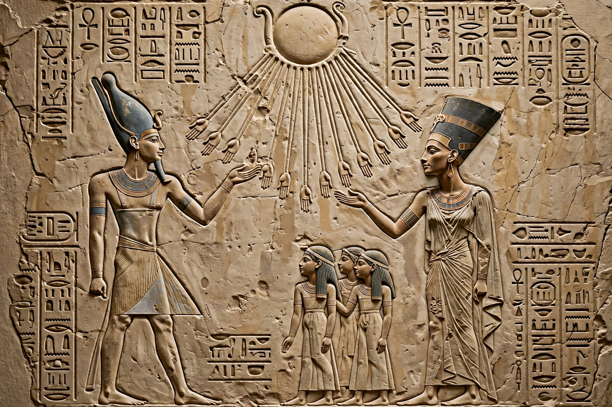

Atenism
| Atenism | |
|---|---|
| Type | Monotheistic religion of ancient Egypt |
| Founder | Pharaoh Akhenaten (Amenhotep IV) |
| Principal deity | The Aten (sun disk) |
| Period | Amarna Period, 18th Dynasty (c. 1353–1336 BC) |
| Capital | Akhetaten (Amarna) |

Atenism, also known as the Aten religion, the Amarna religion, and the Amarna heresy, was a religion in ancient Egypt. It was founded by Akhenaten, a pharaoh of the 18th Dynasty who reigned during the late 14th century BC. Atenism was centred on the worship of the Aten, the visible disk of the sun, elevated above all other Egyptian gods.
History
Early in his reign, Amenhotep IV emphasised the cult of the Aten within the traditional polytheistic framework. In about his fifth regnal year he changed his name to Akhenaten ("Effective for the Aten"), founded a new capital at Akhetaten (modern Amarna), and launched vast building programmes of open-air temples to the sun disk, whose rays were depicted ending in small hands.
In the later part of the reign the movement hardened: the names of Amun and other gods were erased from monuments across Egypt, temples were closed, and the plural word "gods" itself was attacked. Akhenaten's Great Hymn to the Aten, inscribed in the tomb of the courtier Ay, praises the sun disk as the sole creator and sustainer of all life — one of the earliest expressions of monotheism.
Decline and legacy
Atenism did not outlive its founder by long. After Akhenaten's death, the court abandoned Amarna; under Tutankhamun the old cults were restored, and later pharaohs such as Horemheb dismantled the Aten temples and attempted to erase the Amarna kings from history. Because of this reaction, Atenism is sometimes described as a "heresy", and the episode remains one of the most debated religious revolutions of the ancient world, occasionally compared to later monotheistic faiths.
See also: Akhenaten · Amarna · Ancient Egyptian religion · Monotheism